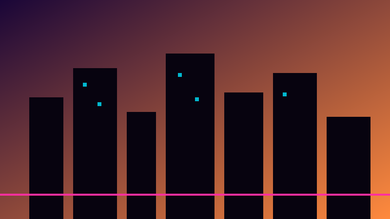
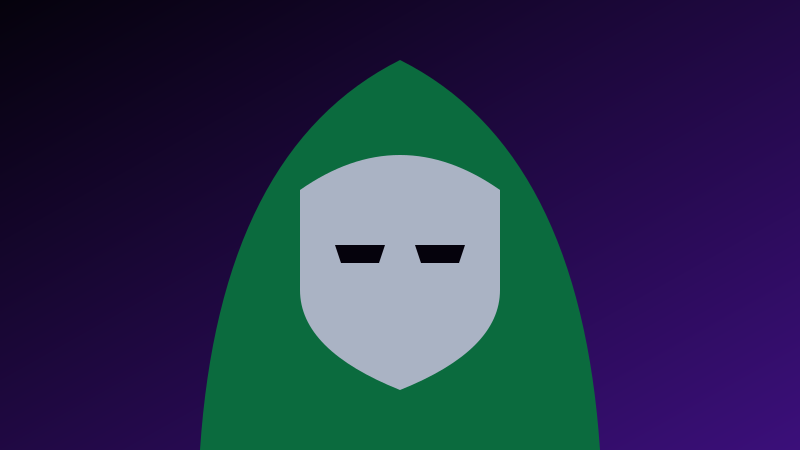
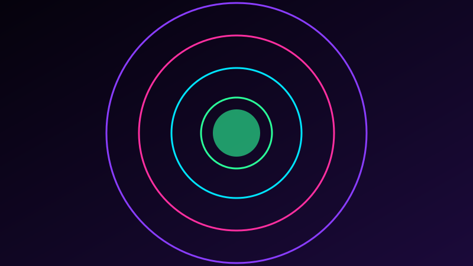

GRAND THEFT AUTO VI
Vice City, Leonida. PlayStation 5 und Xbox Series X|S.
Release
Vorab-Download (Pre-Load)
GTA VI – Infos
Spiel
Open-World-Actionspiel von Rockstar Games (Publisher: Take-Two Interactive), zurück in Vice City und im Bundesstaat Leonida. Bisher nur für PS5 und Xbox Series X|S angekündigt, keine PC-Version angekündigt.
Hauptfiguren
Jason und Lucia, ein kriminelles Duo in einer Bonnie-und-Clyde-artigen Geschichte.
Release
- Release: Do., 19. November 2026
- Pre-Load: ab 10. November 2026 (laut Rockstar-Meldung)
- Vorbestellungen: seit 25. Juni 2026
Fakten
- Zweimal verschoben (2025 → 26. Mai 2026 → 19. Nov. 2026)
- Trailer 1: 4. Dez. 2023, Trailer 2: 6. Mai 2025
- „An Extended Look“: 26 Min. Spielmaterial (27. Aug. 2026)
- Berichtete Größe: ca. 212 GB

Wird das Video nicht geladen: Offizielle Rockstar-Videoseite (Trailer 1, 2, Extended Look)
AVENGERS: DOOMSDAY
Robert Downey Jr. als Doctor Doom. Marvel Studios.
Deutscher Kinostart
Avengers: Doomsday – Infos
Film
Regie: die Russo-Brüder, Drehbuch: Michael Waldron. Teil eines Zweiteilers. Studio: Marvel Studios / Walt Disney Studios.
Doctor Doom
Dargestellt von Robert Downey Jr. (nicht als Iron Man). Im Trailer bedroht er das Multiversum und tritt gegen Thor an.
Start
- Deutschland: 16. Dezember 2026
- USA: 18. Dezember 2026
- Ursprünglich: 29. April 2026
Besetzung (Auswahl)
- Chris Hemsworth (Thor)
- Chris Evans (Steve Rogers)
- Pedro Pascal (Mr. Fantastic)
- Ian McKellen (Magneto)
- Channing Tatum (Gambit)


Wird das Video nicht geladen: Trailer auf YouTube öffnen